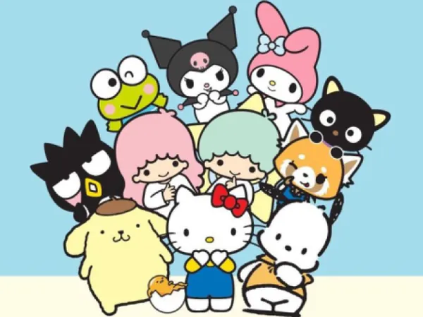

HISTÓRIA

A hello kitty é uma personagem da cultura pop japonesa, criada em 1974 pela empresa japonesa sanrio, fundada por Shintaro Tsuji, e desenhada pelo designer Yuko Shimizu, seu primeiro produto foi uma moedinha para porta-moedas de vinil, em 1975 no Japão. Na época o Japão vivia um momento de grande interesse por proutos fofos, o início da cultura kawaii.
VER MAIS
SÉRIES

Desde sua criação, Hello Kitty apareceu em diversas séries de TV (animações japonesas e adaptações internacionais). Essas produções ajudaram a espalhar sua popularidade pelo mundo.!
VER SÉRIES